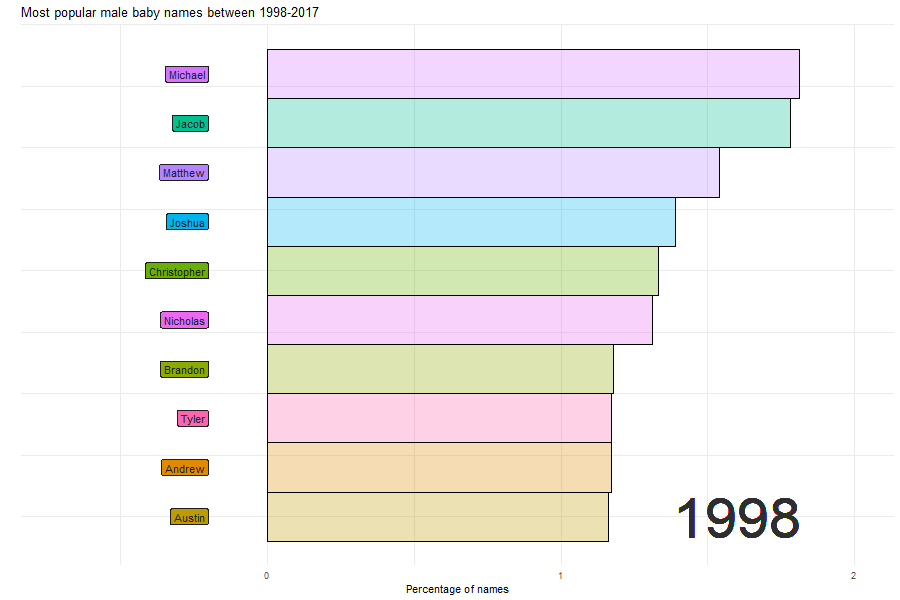
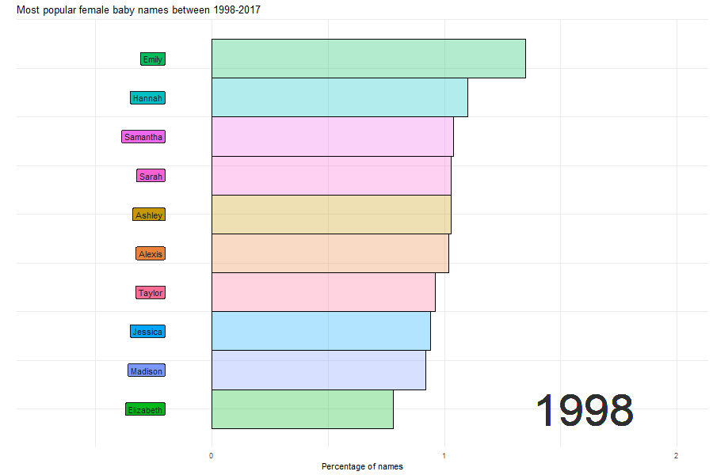

# For loading Tidy Tuesday data
library(babynames)
# EDA
library(tidyverse)
library(DT)
# Interactive visualization
library(gganimate)Tidy Tuesday: Most popular names in the last decade
In this post, I will analyse the #TidyTuesday dataset and create a racing bar chart using ggplot2 for the most popular names in the last decade.
The data comes from the “Babynames” package by Hadley Wickham.
Tip
You can find my github code repository here.
Load libraries
Load data
I am using the “babynames” dataset from the “Babynames” package.
babynames# A tibble: 1,924,665 × 5
year sex name n prop
<dbl> <chr> <chr> <int> <dbl>
1 1880 F Mary 7065 0.0724
2 1880 F Anna 2604 0.0267
3 1880 F Emma 2003 0.0205
4 1880 F Elizabeth 1939 0.0199
5 1880 F Minnie 1746 0.0179
6 1880 F Margaret 1578 0.0162
7 1880 F Ida 1472 0.0151
8 1880 F Alice 1414 0.0145
9 1880 F Bertha 1320 0.0135
10 1880 F Sarah 1288 0.0132
# … with 1,924,655 more rowsdatatable(babynames %>%
head())Clean and rank the data
ranked_by_year <- babynames %>%
mutate(prop = round(prop*100, 2)) %>%
select(sex, year, name, var = prop) %>%
group_by(sex, year) %>%
arrange(year, -var) %>%
mutate(rank = 1:n()) %>%
filter(rank <= 10)Function to filter the data
data_filter <- function(ranked_by_year, sex_filter = "M", year_min = 1998) {
ranked_by_year %>%
filter(sex == sex_filter,
year >= year_min)
}Function to create the ggplot for filtered variables
plot_rect_function <- function(data, title_text) {
data %>%
ggplot() +
aes(xmin = 0,
xmax = var) +
aes(ymin = rank - 0.5,
ymax = rank + 0.5,
y = rank) +
theme_minimal() +
facet_wrap(~ year) +
geom_rect(alpha = 0.3, color = "black") +
aes(fill = name) +
scale_x_continuous(
limits = c(-2, 1.4)
) +
geom_label(col = "gray12",
hjust = "right",
aes(label = name, fill = name),
x = -0.2) +
scale_y_reverse() +
labs(fill = NULL) +
labs(title = title_text,
y = "",
x = "Percentage of names") +
facet_null() +
scale_x_continuous(
limits =c(-0.7, 2)
) +
geom_text(x = 1.6 , y = -10,
family = "Times",
aes(label = as.character(year)),
size = 20, col = "grey18") +
aes(group = name) +
theme(legend.position = "none",
axis.text.y = element_blank())
}Create plots for filtered Male and Female names
plot_rect_M <- ranked_by_year %>%
data_filter("M", 1998) %>%
plot_rect_function(title_text = "Most popular male baby names between 1998-2017")
plot_rect_F <- ranked_by_year %>%
data_filter("F", 1998) %>%
plot_rect_function(title_text = "Most popular female baby names between 1998-2017")Animate with GGAnimate over time
While the above plot looks extremely scrambled, applying gganimate and looking at it over time will clean it up.
Male names between 1998 and 2017
The name “Jacob” went from rank 1 to rank 10 by 2017 but stayed on the charts throughout!
names_prop_animated_M <- plot_rect_M +
gganimate::transition_time(year)
animate(names_prop_animated_M, duration =30, fps = 10, width = 900, height = 600, renderer = gifski_renderer(), end_pause = 100, start_pause = 30)
anim_save(file = "popular_names_Male.gif")Female names between 1998 and 2017
The name “Emily” went from rank 1 to not surviving the top 10 chart by 2017.
names_prop_animated_F <- plot_rect_F +
gganimate::transition_time(year)
animate(names_prop_animated_F, duration =30, fps = 10, width = 900, height = 600, renderer = gifski_renderer(), end_pause = 100, start_pause = 30)
anim_save(file = "popular_names_Female.gif")